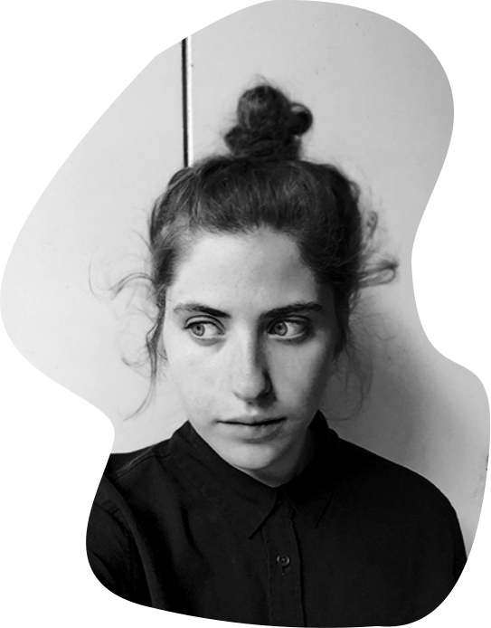
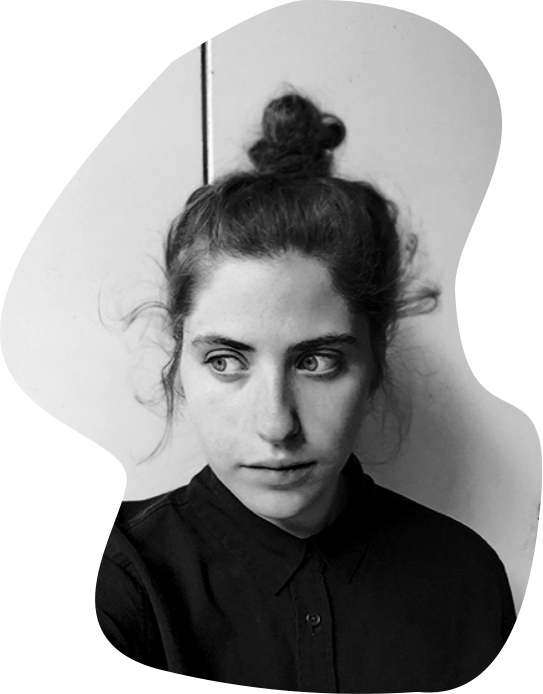

a bit about me
I love making websites, drawings and happy accidents—and luckily I do all that for a living!
When I lived in New York, I designed for hotels and startups, ran a marathon, and interned at my favorite museum (did you know employees at the Met get their own food court?) But fed up with designing in a vacuum and pixel-pushing for CEOs, I shoved everything I owned into a suitcase to move to Chicago and learn UI/UX at Designation—and design seven days a week alongside other human-centered design nerds (and the occasional office dog). Now I’m looking for fun and rewarding opportunities on the west coast to make interactive experiences for brands and causes I’m passionate about!